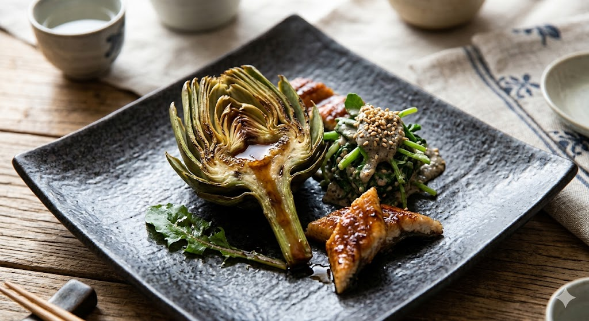
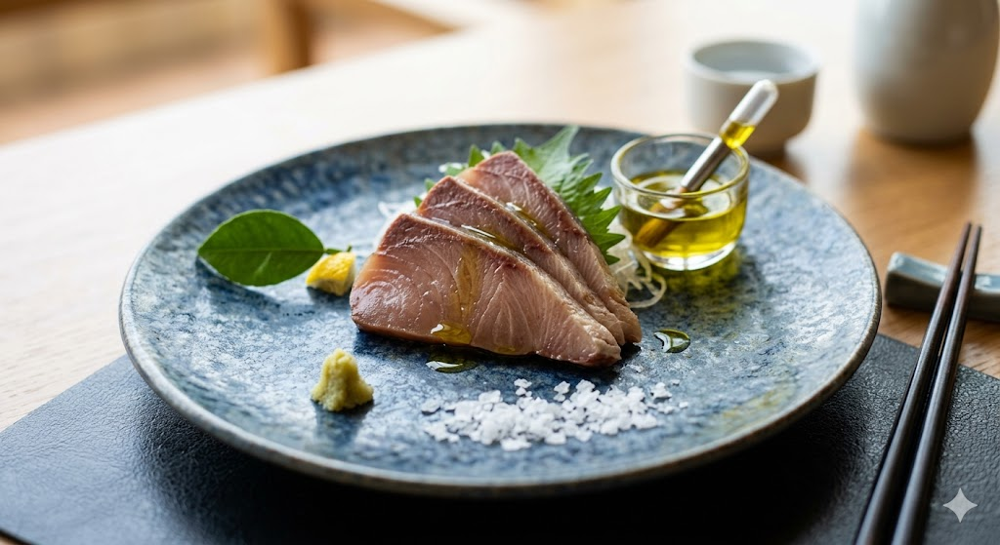
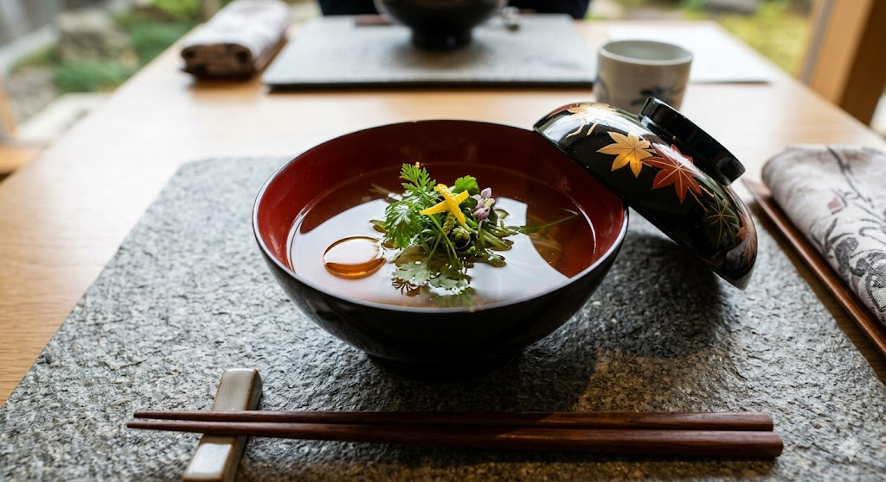
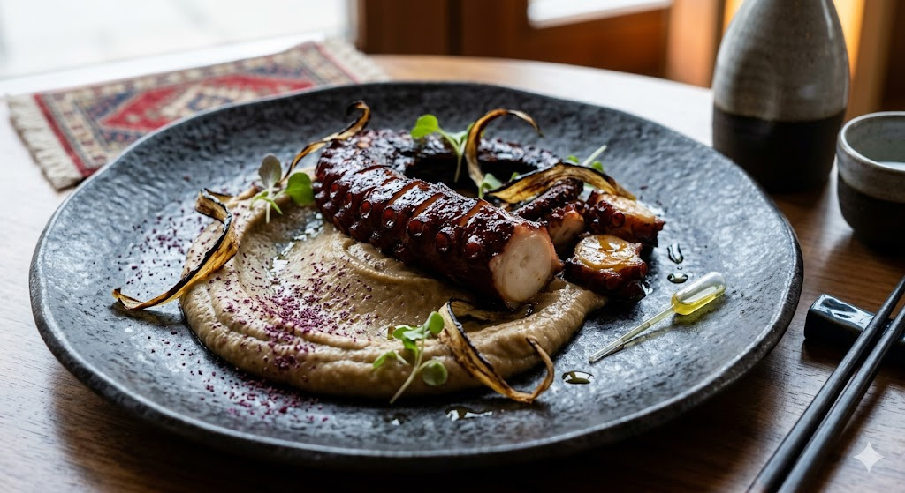
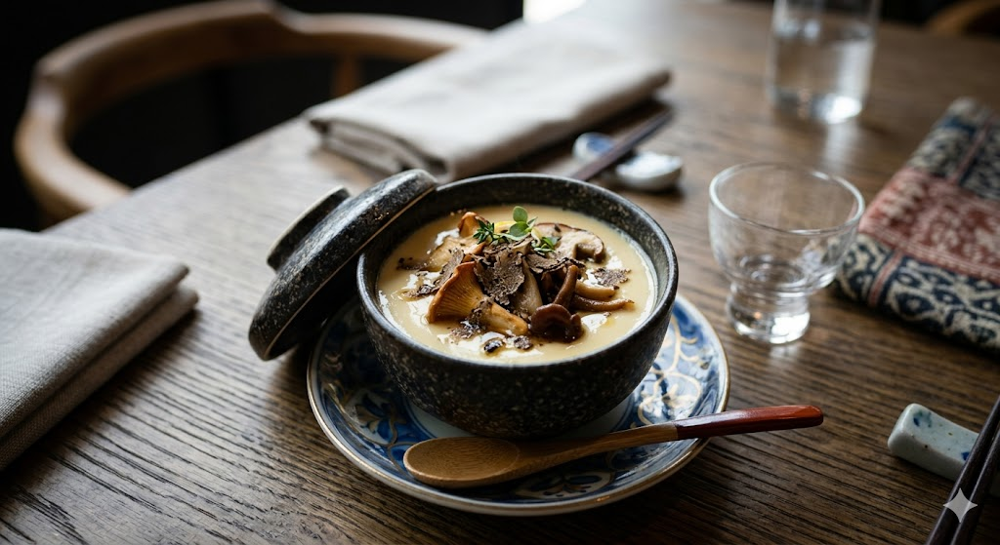

A Seasonal Sequence of Fire, Sea, and Quiet Precision
The menu unfolds in deliberate chapters, paced like a kaiseki ritual and shaped by the produce,
coastline, and smoke of Anatolia.
MENU PHILOSOPHY
Each course shifts the tempo of the night.
Opening plates stay bright and saline, middle courses deepen into steam and ember, and the close
returns to clarity with restrained sweetness. Nothing is added for spectacle alone.
CURRENT MENU
THE FULL TASTING ORDER
The courses below are arranged in service order, from the opening sakizuke to the final dessert
sequence and petit fours.
Menu Courses
01Opening
Sakizuke Anatolian Soil
Black garlic soil, fermented chickpea miso cream, pickled herbs
Ingredients chickpea miso, black garlic, seasonal herbs
Allergens Soy

02Seasonal Composition
Hassun Seasonal Composition
Grilled baby artichoke, smoked eel glaze, sesame herb salad
Ingredients artichoke, eel, sesame, greens
Allergens Fish, Sesame, Soy

03Otsukuri
Otsukuri Dry-Aged Bluefish
Aegean olive oil, yuzu-kosho, sea salt
Ingredients bluefish, citrus, olive oil
Allergens Fish

04Wanmono
Wanmono Clear Dashi Soup
Bonito broth, anchovy oil, micro herbs
Ingredients bonito, anchovy, herbs
Allergens Fish

05Yakimono
Yakimono Fire Grilled Octopus
Fermented eggplant puree, miso glaze, sumac
Ingredients octopus, eggplant, miso
Allergens Mollusks, Soy

06Mushimono
Mushimono Chawanmushi
Savory egg custard, Aegean mushrooms, black truffle
Ingredients egg, mushrooms, truffle
Allergens Egg, Soy
Sushi Experience
07Nigiri I
Nigiri I Aged Amberjack
Seaweed butter, citrus zest
Ingredients amberjack, seaweed
Allergens Fish
08Nigiri II
Nigiri II Charcoal Seared Trakya Beef
Bone marrow glaze, sansho pepper
Ingredients beef, bone marrow
Allergens None (trace possible)
09Signature Roll
Signature Roll Bosphorus Current
Blue crab tempura, green apple, shiso, yuzu emulsion